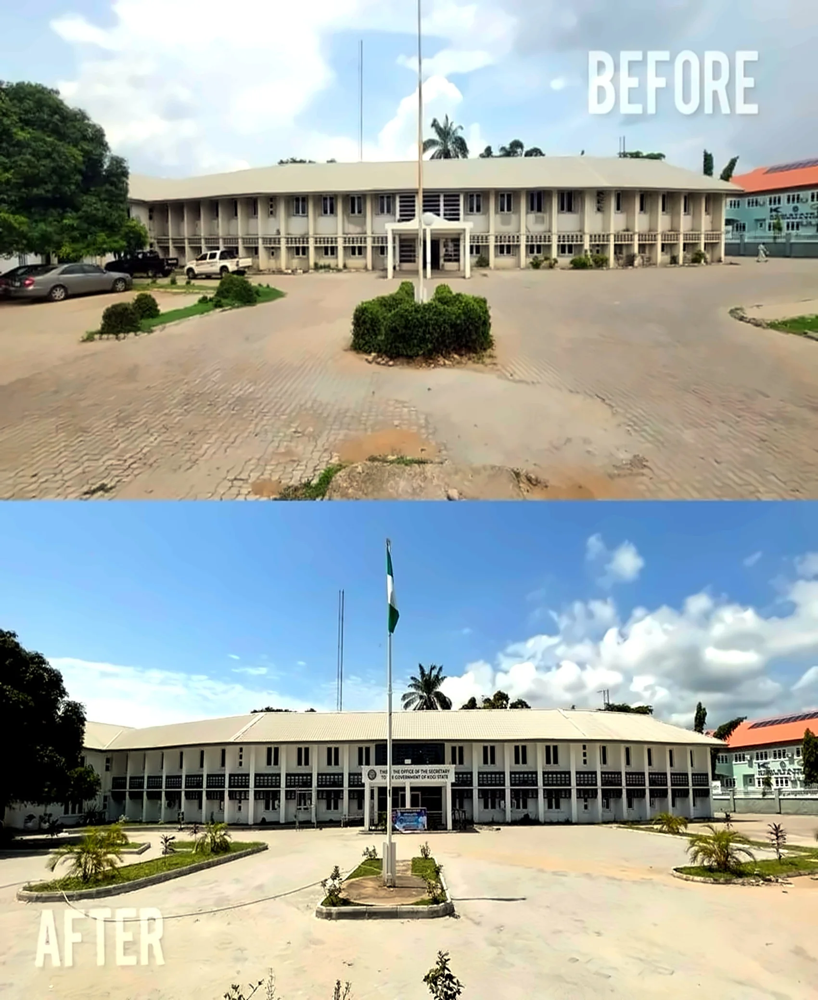

Project Archive
The work is the proof.
A curated visual archive built from the current Salizra Homes photography pack. New project details can be added without redesigning the gallery.
4Core capabilities
15Current image records
Established
NigeriaProject context
Project Detail

Life Camp, AbujaBrowse All Images
NMCN Head Office construction
The current pack includes multiple construction stages and a before/after image, making this a useful candidate for a fuller project case study once the project facts are confirmed.
TypeInstitutional
MediaProgress photography
Case-study statusReady for details
Explore
Browse by capability.
More to come
New project facts can drop into this system cleanly.
When you receive verified project names, clients, locations, dates and completion status, they can be added to the cards and expanded into individual case studies.